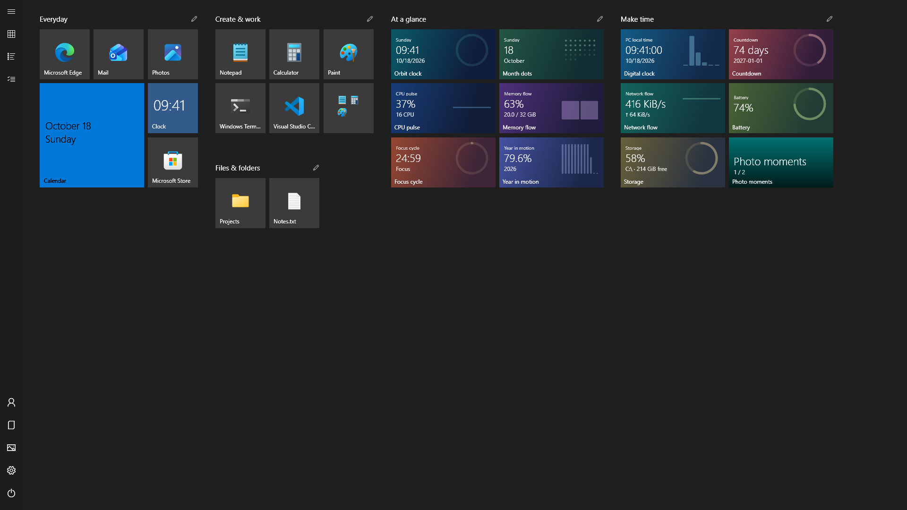

Start menu guide
How to Restore the Windows 10 Full-Screen Start Menu on Windows 11
If you used Start as a full-screen home for your apps, a compact list can feel like a step back. Here is how to get a tile-based workspace on Windows 11, with a reversible setup.
You can recreate the full-screen Start experience on Windows 11 with ReStart. It runs as a separate, free, open-source launcher inspired by late Windows 10. It gives you resizable tiles, named groups, folders and custom live tiles; it does not turn Windows 11’s built-in menu back into the Windows 10 shell.
What Windows 11 includes, and what changed
Windows 10 offered a Use Start full screen switch in Settings → Personalization → Start. Microsoft’s Start customization guide documents that switch under Windows 10. Windows 11 has its own Start layout and customization options, which vary with the Windows update installed. A larger Windows 11 menu is still a different experience from the Windows 10 full-screen tile canvas.
Microsoft also lists the removal of Live Tiles in its Windows 11 feature deprecations. ReStart supplies an independent tile workspace rather than relying on a hidden Windows setting or an old registry workaround. Windows remains installed and your ordinary desktop stays available.


Download and set up ReStart
- Choose the correct portable package. Open the official GitHub release. Use
ReStart-win-x64.zipfor an Intel or AMD 64-bit PC, orReStart-win-arm64.zipfor Windows on ARM. If unsure, check System type in Windows Settings → System → About. - Extract the entire ZIP. Choose a folder you can keep, then extract everything. Keep the supporting folders, including
TileHostandExamples, besideReStart.exe. Copying the executable alone leaves out files used by live tiles. The package includes its .NET dependencies; there is no separate .NET installation step. - Open
ReStart.exe. ReStart discovers your installed apps and prepares an initial layout. Everyday use does not require elevation. HTML live tiles need Microsoft Edge WebView2 Runtime; if it is missing, ReStart reports the requirement rather than installing it silently. - Choose how to open it. In ReStart settings, Open ReStart with a single Windows key press and Open ReStart when I click the Windows Start button control the optional integrations. You can also use Ctrl + Alt + Space or the notification-area menu. Enable sign-in startup if you want ReStart ready after logging in.
Current packages are unsigned. Download from the project’s official release page, use the published checksums if you need to verify a download, and follow your Windows or organization’s software policy.
Arrange your apps and live tiles
Build a layout around what you actually open
Find an app in All apps or search, then use its context menu to pin it. Documents, directories and shortcuts can be pinned too. Resize a tile to Small, Medium, Wide or Large and drag it into place. Named groups separate activities; folders collect related tiles and expand in place. Dropping in empty space creates an unnamed group. Overlap another tile and wait for the folder preview to create a folder. Hold Shift while dragging to rearrange without folder actions, or Alt to place independently in empty space. You can enable free placement as the default in Start behavior settings; existing saved layouts are preserved.
For a first layout, try a group for everyday apps and another for work tools. Leave space for a clock or CPU monitor rather than filling every gap. Right-click the background or a group and choose Add live tile to browse the included packages. The live tile guide explains the samples and their data connections.
Move several things without launching an app
Use multi-selection mode, available with Ctrl + E, when you want to move several tiles together or edit placement with the keyboard. Session Undo and Redo help recover from a move you did not intend. Once you like the result, Lock layout prevents accidental rearrangement.
Choose appearance and everyday behavior
Follow the Windows theme, choose light or dark, or customize the accent and background colors. ReStart can use your desktop wallpaper or a separate background image. Animation and hover effects have settings, and reduced motion and high contrast follow Windows accessibility preferences.
Open ReStart and start typing to search. You can use the app's displayed name, its executable filename or a Windows-declared execution alias. For example, notepad and cmd can find their installed apps even when Windows displays translated names. These names come from local app metadata rather than a fixed translation list. Shortcuts with extra launch arguments, such as developer prompts, rank after the ordinary app for a shared executable name. Available names depend on the installed app.
The selected match is ready for Enter and retains the original app icon and launch target. Optional local filename search and supported Windows settings entries extend app search. These are ReStart's local launcher results, with no Cortana or web-results panel; they do not reproduce the complete Windows Search ranking.
What stays different from Windows 10
- A new launcher, with its own layout. ReStart is an independent implementation, not a Microsoft product. It does not import the Windows Start layout or modify Explorer through injected DLLs. Optional key and Start-button hooks can be disabled.
- New live tiles. HTML/CSS/JavaScript packages run inside ReStart. They do not restore the old UWP notification service, unread counts from arbitrary installed apps, or background tile delivery from Windows 10.
- Integration depends on the environment. Taskbar and input behavior can differ across Windows builds and configurations. Keep the shortcut or tray menu available if the Start-button integration does not work on your setup.
- Coverage has boundaries. x64 and ARM64 packages are published, but that does not mean every device has been tested. The platform coverage notes distinguish measured display geometry and accessibility checks from remaining device checks, including physical touch and display reconnects.
Common questions
Do I have to downgrade to Windows 10?
No. ReStart runs on Windows 11 and offers a Windows 10-inspired full-screen interface. Your operating system and Windows apps stay in place.
Will this restore the exact old Start menu?
It recreates the interaction model with independently implemented controls. Pixel-perfect timing, every shell feature and legacy Microsoft app tile content are not promised. Layout locking, multi-selection and web tile authoring are ReStart additions.
Can I go back to the normal Windows Start menu?
Yes. Disable the optional Windows-key and Start-button integrations in settings, or exit ReStart from its notification-area menu. Turn off sign-in startup as well if you no longer want it running after login.
How do I keep it updated without losing my arrangement?
ReStart can check public GitHub Releases, with an optional startup notification. From v1.6.0, complete unmodified portable packages in writable folders offer Download update, then Restart and update after verification. A failed installation or candidate startup restores the previous files. Manual replacement remains available for developer builds and older packages. Local settings are stored separately. See the update and backup guide before moving between versions or PCs.
Sources and coverage
This guide is maintained by the ReStart project and covers v1.6.0. Product instructions were checked against the release README, source code and Start behavior documentation. Windows behavior is sourced from Microsoft’s linked documentation; this article does not claim a new hands-on test of every supported device.